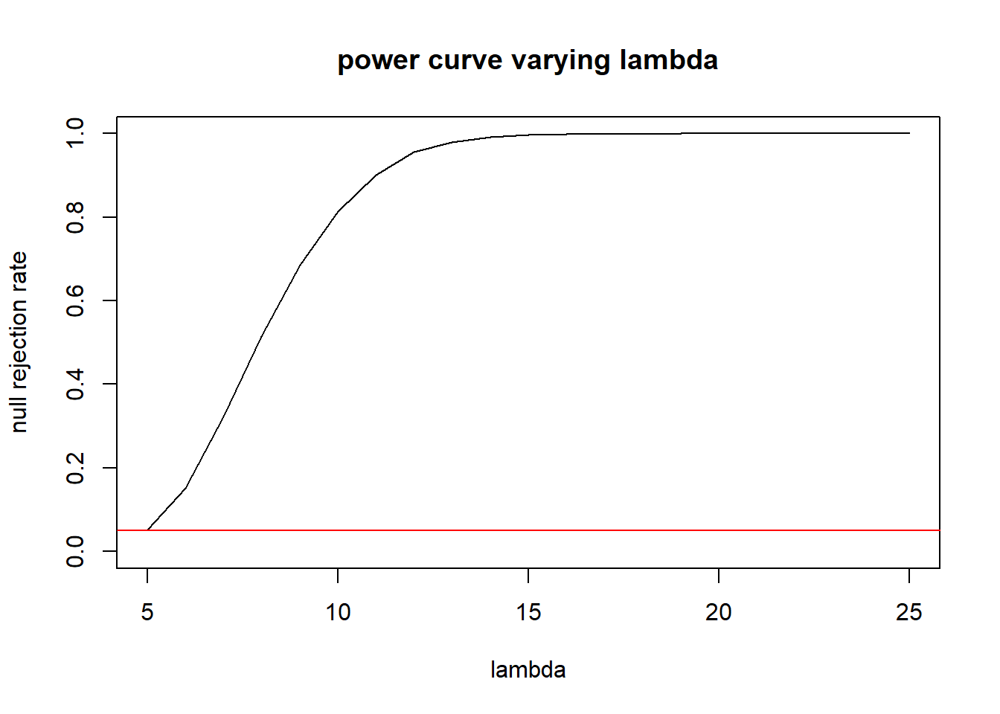
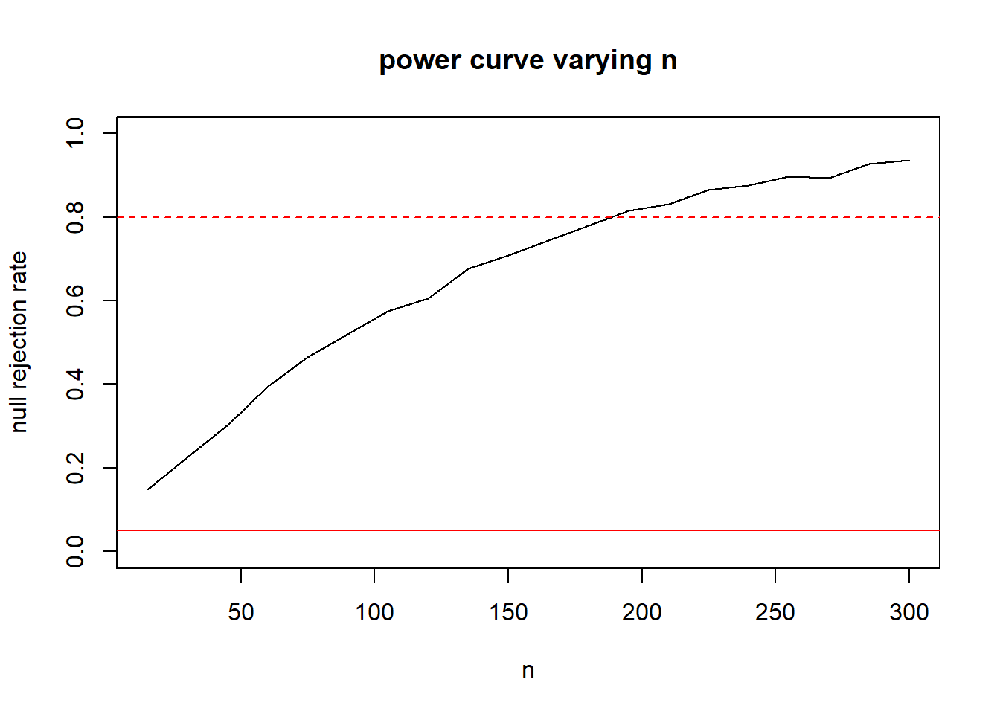
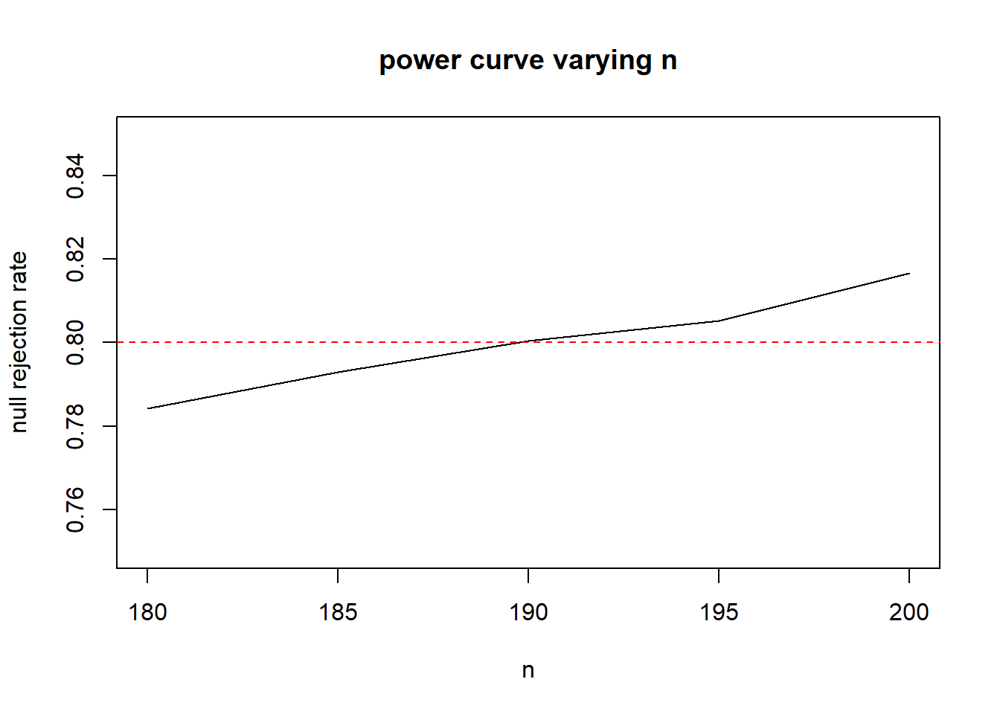
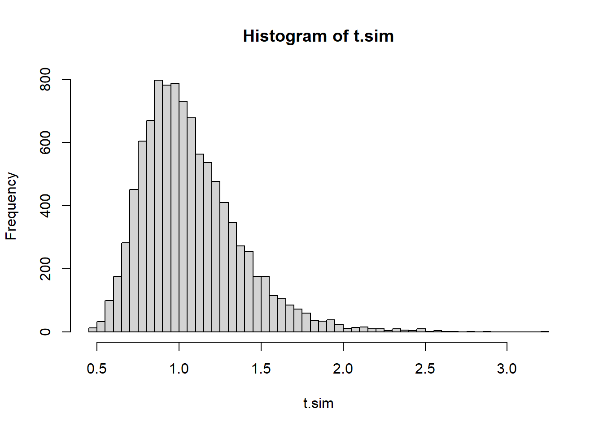
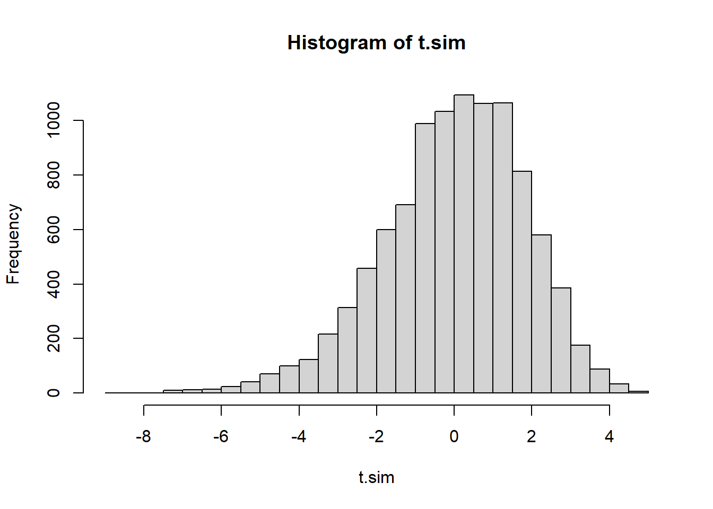
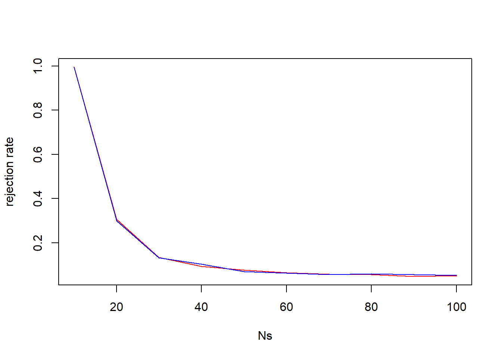

generate_cups <- function(k, n){
return(sample(c(rep(0,k), rep(1, n-k))))
}
generate_guesses <- function(k,n){
return(generate_cups(k,n))
}
#Establish test statistic distribution
NMC <- 10000
t.sim <- replicate(NMC, sum(generate_cups(4,8) ==
generate_guesses(4,8)))
threshold <- quantile(t.sim, .95)
p.above <- mean(t.sim > threshold)
p.at <- mean(t.sim == threshold)
prob.reject.at <- (.05-p.above)/p.at18 Testing and Power Practice
19 Practice Problems
19.1 Precise Tea Testing
Returning to the example of Muriel Bristol, suppose that Fisher wanted to establish a decision rule that would have achieve an exact \(\alpha\) level of 0.05. How would that be done? (Don’t simply say reject \(H_0\) with probability .05, you can make a more powerful test than that)
Remember that the test goes like this: 4 cups of “milk-first” tea and 4 cups of “milk-second” tea are shuffled. Muriel tastes each one and attempts to identify the 4 “milk-first” cups. Under the null hypothesis she is a random guesser.
Establish your rule and demonstrate that its type 1 error rate is 0.05 using Monte Carlo.
Solution
Recall the functions used for this Monte Carlo test
The rule is to reject \(H_0\) if there are more than 6 correct guesses. If there are exactly 6 correct guesses, reject \(H_0\) with probability 0.1580125.
#verify
NMC.2 <- 10000
result <- logical(NMC.2)
for(i in 1:NMC.2){
n.correct <- sum(generate_cups(4,8) ==
generate_guesses(4,8))
if(n.correct>threshold |
(n.correct==threshold & runif(1)<prob.reject.at))
result[i] = TRUE
}
mean(result)[1] 0.0501The code above checks the rejection rate of \(H_0\) when \(H_0\) is true, this is the type 1 error rate. It is very close to 0.05.
19.2 An Exponential Test
Consider a population \(X\sim exponential(\lambda)\). The test \(H_0: \lambda = 5\) vs \(H_A: \lambda > 5\)
Consider a sample size of 15 from this population. Because \(E(X)=\frac{1}{\lambda}\), we can use \(\frac{1}{\bar{X}}\) as a test statistic.
Would you consider large or small values of \(\bar{X}\) to be evidence supporting the alternative?
Suppose we want to test this claim with \(\alpha=0.05\). Find a \(\bar{X}^*\) for which we will reject \(H_0\) if \(\bar{X}\) is more extreme (which tail are we testing???)
Take \(\lambda_A\) values from 5 to 25, by 1s. Using the rejection rule you chose in part b, calculate the power of the test if the true lambda is \(\lambda_A\) and the sample size remains at 15.
Suppose that \(\lambda = 6\) not \(5\) as the null hypothesis asserts. What sample size \(n\) would you need to achieve a power of 80% to reject \(H_0\) while maintaining \(\alpha=0.05\)? Note - you will need a different threshold for each sample size!
Solution
Since \(\bar{X}\approx E(X)=\frac{1}{\lambda}\), a small \(\bar{X}\) would indicate a large \(\lambda\). So using \(\bar{X}\) as our test statistic, we’d consider this a left-tailed test.
Under the null hypothesis, we’d like to simulate a distribution of test statistics.
set.seed(1)
t.sim <- replicate(100000, mean(rexp(15, rate=5)))
quantile(t.sim, prob=.05) 5%
0.1230636 So if \(\bar{X}<.12306\) we could consider this strong evidence that \(\lambda>5\).
lambdas <- seq(5, 25, 1)
rr <- numeric(length(lambdas))
for(i in 1:length(lambdas)){
t.alt <- replicate(10000, mean(rexp(15, rate=lambdas[i])))
rr[i] <- mean(t.alt < .1230636)
}
plot(x=lambdas, y=rr, type="l",ylab="null rejection rate", xlab="lambda", main="power curve varying lambda", ylim=c(0,1))
abline(h=.05, col="red")
- We can repeat the above, but let N vary instead. In order to not take too long, I’ll just check 10 sample sizes and estimate.
ns <- seq(15, 300, length.out=20)
rr <- numeric(length(ns))
for(i in 1:length(ns)){
t.sim <- replicate(5000, mean(rexp(ns[i], rate=5)))
t.alt <- replicate(5000, mean(rexp(ns[i], rate=6)))
#continue to use the 5th percentile from the t.sim as our threshold
#this will vary with n.
rr[i] <- mean(t.alt < quantile(t.sim, 0.05))
}
plot(x=ns, y=rr, type="l",ylab="null rejection rate", xlab="n", main="power curve varying n", ylim=c(0,1))
abline(h=.05, col="red")
abline(h=.80, col="red", lty=2)
Seems to be a sample size around 190. We can repeat with a zoom in to get a more precise estimate:
ns <- seq(180, 200, by=5)
rr <- numeric(length(ns))
for(i in 1:length(ns)){
t.sim <- replicate(40000, mean(rexp(ns[i], rate=5)))
t.alt <- replicate(40000, mean(rexp(ns[i], rate=6)))
#continue to use the 5th percentile from the t.sim as our threshold
#this will vary with n.
rr[i] <- mean(t.alt < quantile(t.sim, 0.05))
}
plot(x=ns, y=rr, type="l",ylab="null rejection rate", xlab="n", main="power curve varying n", ylim=c(.75,.85))
abline(h=.05, col="red")
abline(h=.80, col="red", lty=2)
Increasing the number of replicates, and zooming in to sample sizes between 180 to 200, it looks like 190 is a pretty good estimate.
19.3 Type 1 and Type 2 errors
In the following situations, describe the null and alternative hypothesis, and what would be a type 1 error or a type 2 error for each situation.
We are testing to see if a new medical procedure is better than the standard procedure.
We are testing to see if people can tell the difference between Pepsi and Coke.
We are trying to figure out if a painting in a gallery is a forgery.
We are testing a patient to see if they have a certain disease.
Solution
The null hypothesis would be that the new procedure is no better than the standard, the alternative would be that the new procedure is better. A type 1 error would be concluding that the new procedure is better when in fact it is not. A type 2 error would be failing to realize that the new procedure is an improvement when in fact it is.
The null hypothesis is that people cannot, on average, tell the difference. The alternative hypothesis is that people can tend to tell the difference. A type 1 error would be to conclude that people can tend to taste the difference even though they cannot. A type 2 error is failing to recognize people taste the difference when they do.
The null hypothesis is the painting is legit. The alternative hypothesis is that it is a forgery. A type 1 error is concluding it is a forgery when it is actually legit. A type 2 error is being fooled by the forgery!
The null hypothesis is that the patient does not have the disease, the alternative hypothesis is that they do have the disease. A type 1 error is a false positive (conclude they have the disease when they don’t) and a type 2 error is a false negative (not detecting the presence of the disease even though it is there).
19.4 A Poisson Test
Suppose we have some data and we wish to determine if it comes from a Poisson distribution.
mysteryData <- c(7,8,6,7,9,8,8,6,9,8,7,7,9,8,10,
5,8,7,7,7,8,9,6,8,9,9,9,7,9,7)Test \(H_0: \lambda=7\) vs \(H_A: \lambda \not=7\), assuming the distribution is a Poisson in either case. What test statistic would be good? Perform a Monte Carlo test.
Now test \(X\sim Poisson(7)\) vs \(X \not\sim Poisson(7)\). Consider two test statistics: \(\bar{X}/S^2\) and \(\bar{X}-S^2\). Calculate a p-value for either.
Suppose the alternative distribution is a binomial. In particular, recall that if \(p\) is small and \(n\) is large, a binomial looks awful similar to a Poisson distribution. If \(\lambda=7\) that’s similar to \(p=7/n\) for some large \(n\). As \(n\) gets smaller the distribution looks less and less like a Poisson. Consider \(n\) from 100 to 10. Use Monte Carlo to plot a power curve of the two possible test statistics from part b, maintaining \(\alpha=0.05\) for all \(n\)s. Is either more powerful?
Solution
- The sample mean \(\bar{X}\) is a reasonable test statistic to use since \(E(X)=\lambda\) for a Poisson distribution.
set.seed(1)
t.sim <- replicate(10000,
mean(rpois(length(mysteryData), 7)))
#2 sided test
(xbar <- mean(mysteryData))[1] 7.7333332* min(mean(t.sim <= xbar),
mean(t.sim >= xbar))[1] 0.1416We estimate a \(p\)-value of .1416. This indicates our data would not be unusual if \(\lambda=7\).
#First we use Xbar/S^2
set.seed(1)
testStat <- function(poisData){
return (mean(poisData)/var(poisData))
}
t.sim <- replicate(10000,
testStat(rpois(length(mysteryData), 7)))
#2 sided test
(t.obs <- testStat(mysteryData))[1] 5.625418hist(t.sim, breaks=40)
2* min(mean(t.sim <= t.obs),
mean(t.sim >= t.obs))[1] 0#First we use Xbar/S^2
set.seed(1)
testStat <- function(poisData){
return (mean(poisData)-var(poisData))
}
t.sim <- replicate(10000,
testStat(rpois(length(mysteryData), 7)))
#2 sided test
(t.obs <- testStat(mysteryData))[1] 6.358621hist(t.sim, breaks=40)
2* min(mean(t.sim <= t.obs),
mean(t.sim >= t.obs))[1] 0The conclusion from either of these tests indicate that we have overwhelming evidence that the data could not have come from \(Poisson(7)\). Coupled with the conclusion from part a, it’s reasonable to conclude the data unlikely came from a Poisson distribution at all.
Ns <- seq(100, 10, by=-10)
ps <- 7/Ns
rr1 <- numeric(length(ps))
rr2 <- numeric(length(ps))
testStat1 <- function(poisData){return (mean(poisData)/var(poisData))}
testStat2 <- function(poisData){return (mean(poisData)-var(poisData))}
for(i in 1:length(rr1)){
crits1 <- quantile(replicate(10000,
testStat1(rpois(length(mysteryData), 7))),
c(.025, .975))
t.alt1 <- replicate(10000,
testStat1(rbinom(length(mysteryData),
Ns[i],
ps[i])))
rr1[i] <- mean(t.alt1 <= crits1[1] | t.alt1 >= crits1[2])
crits2 <- quantile(replicate(10000,
testStat2(rpois(length(mysteryData), 7))),
c(.025, .975))
t.alt2 <- replicate(10000,
testStat2(rbinom(length(mysteryData),
Ns[i],
ps[i])))
rr2[i] <- mean(t.alt2 <= crits2[1] | t.alt2 >= crits2[2])
}
plot(x=Ns, y=rr1, type="l", col="red", ylab="rejection rate")
lines(x=Ns, y=rr2, col="blue")
It is very hard to see much difference. Neither test statistic seems to be more sensitive to deviations from “Poissonity” under this setting.
20 Beyond STAT 340
These problems are excellent practice but they are beyond the material we cover in STAT 340.